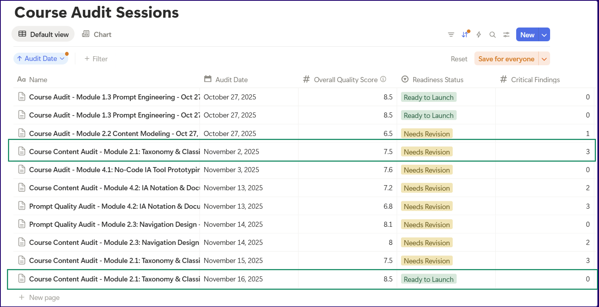

Demonstrating quantifiable improvements in content quality
When you use AI to build an online course, how do you know if it's actually good?
I can answer that in corporate speak: measure it.
The problem with "It looks good"
The worst way to create content with AI would be to:
- Generate a module with Claude/ChatGPT
- Read through it, think "this looks good"
- Publish it
- Hope your readers find it useful 😬
"Looks good" is subjective. "Hope readers succeed" is a prayer, not a strategy. I wasn't going to pray for quality!
Building an audit system
I created a custom Claude Skill called course-content-auditor that evaluates educational content across eight core learning dimensions and specialized criteria for documentation. Every audit finding includes:
- Severity level (Critical, High, Medium, Low)
- Effort estimate in hours
- Category (Learning Objectives, Scaffolding, Exercise Quality, etc.)
- Implementation phase (Phase 1-4 based on priority)
The skill generates an overall quality score out of 10 and a readiness status: Ready to Launch, Needs Revision, or Requires Rework.
Most importantly, everything gets tracked in Notion databases with timestamps, allowing me to measure improvement over time with actual numbers.
The first audit: a reality check
On November 2, 2025, I ran the first audit on Module 2.1 (Taxonomy & Classification Systems). The results were...humbling.
**Quality Score: 7.5/10**
**Status: Needs Revision**
Critical Findings: 3
High Priority Findings: 5
Medium Priority Findings: 8
Low Priority Findings: 4
Total Issues: 20
Estimated Fix Time: 40-48 hours
The numbers told me what my "looks good" eye test had missed:
**Critical Issue #1: Time Estimates Wildly Inaccurate**
- Module claimed: "1-2 hours to complete"
- Realistic time: 8-12 hours
- Impact: Damages learner trust, causes frustration
- Fix effort: 30 minutes
**Critical Issue #2: Tutorial Section Incomplete**
- Stopped at Step 3 of 6-step process
- Missing implementation guidance
- No validation examples
- Fix effort: 3.5 hours
**Critical Issue #3: No Self-Validation Framework**
- Learners couldn't check if their work was quality
- No rubrics or success criteria
- Zero troubleshooting guidance
- Fix effort: 4 hours
The pattern was clear: Excellent technical content, inadequate learner support.
My prompts had generated comprehensive, accurate information about taxonomy design. What they hadn't generated were the scaffolding, validation mechanisms, and troubleshooting frameworks that learners need to succeed.
Fixing it with systematic improvements
I spent the next week addressing every finding, prioritizing by severity and learner impact. I added:
1. A comprehensive 5-check validation system
- Depth check (2-3 levels for most sites)
- Balance check (no category >40% of content)
- Granularity check (parallel abstraction levels)
- Exclusivity check (clear content homes)
- Clarity check (specific, descriptive labels)
2. An extensive troubleshooting section
- 8 common issues with recovery steps
- Decision tree for diagnosing problems
- Quick recovery checklist
- Platform-specific guidance
3. Progressive scaffolding in self-assessments
- 7 phases from heavily guided to independent
- Detailed rubrics with point values
- Sample outputs for comparison
4. Realistic time estimates
- Changed from "1-2 hours" to "4-5 hours total"
- Breakdown: 90 min instruction + 2-3 hrs exercises
- Aligned with actual content volume
The second audit: quantifying success
On November 16, 2025, I ran the audit again. Same module, same evaluation framework. Vastly different results!
**Quality Score: 8.5/10** (+1.0 improvement)
**Status: Ready to Launch** (upgraded from "Needs Revision")
Critical Findings: 0 (-3)
High Priority Findings: 0 (-5)
Medium Priority Findings: 3 (-5)
Low Priority Findings: 5 (+1)
Total Issues: 8 (-12, a 60% reduction)
Estimated Fix Time: 4.5 hours (-35.5 hours, 88% reduction)
Here's what these measurements actually mean:
Quality Score Improvement: +13%
Moving from 7.5 to 8.5 out of 10 represents a 13% increase in overall quality. But more importantly, it crosses the threshold from "needs work" to "production-ready."
Critical Issues: -100%
Going from 3 critical issues to zero means the module went from "will frustrate learners" to "learners can succeed independently."
Total Issues: -60%
Reducing from 20 findings to 8 shows systematic improvement across multiple dimensions, not just fixing the obvious problems.
Fix Time: -88%
The remaining issues require 4.5 hours to address versus the original 40-48 hours. This means the module is 88% closer to ideal state.
Readiness Status: Upgraded
"Needs Revision" → "Ready to Launch" is the metric that matters most. The module can now be deployed to learners with confidence.
Identifying a recurring problem across modules
I hadn't expected to see an issue pattern through multiple audits:
- Time estimates 50-75% too low
- Missing validation frameworks
- Inadequate scaffolding
- No troubleshooting guidance
- Incomplete examples/tutorials
An important takeaway for me was: my prompts were consistently excellent at content generation but consistently missed learner support systems.
The humbling lesson in prompt engineering
What I learned about working with AI on educational content:
- AI generates great content when you prompt for content.
- AI doesn't generate learner support unless you explicitly prompt for it.
My prompts focused on:
- "Generate comprehensive content about taxonomy design"
- "Include real-world examples"
- "Show prompt patterns"
What I should have also prompted for:
- "Include validation rubrics so learners can self-assess"
- "Add troubleshooting for common failure modes"
- "Create progressive scaffolding from guided to independent"
- "Provide realistic time estimates based on content volume"
The audit system revealed this gap quantitatively, making it fixable.
In hindsight, I should've run an audit right after generating a single module to know if my prompts needed fixing, before generating the remaining 10 modules! 😒
Why measurement matters
Without systematic audits with numerical tracking, I would have:
- Published inferior content: A 7.0/10 module feels good enough until you measure it
- Missed patterns: Wouldn't have noticed the consistent gap in learner support
- Couldn't prove improvement: "It's better now" vs. "60% fewer issues, 13% higher quality"
- Wasted time guessing: Which issues to fix first? Numbers tell you.
The quantitative approach transforms content improvement from guesswork to a process.
What's next
I'm continuing this audit process across all 11 modules, tracking improvements in the same Notion databases. The goal is to:
- Establish baseline quality scores for each module
- Identify systematic patterns in AI-generated content gaps
- Improve prompt engineering to reduce common issues
- Document the process for others building educational content with AI
- Measure longitudinal improvement over multiple revision cycles
The ultimate efficiency gain would be to train my prompts to generate content that audits well on first pass!

Practical takeaways
If you're creating educational content with AI:
Build systematic evaluation into your process
Don't rely on "looks good"; create rubrics and frameworks for evaluation.
Track metrics over time
Use a database system (Notion, Airtable, etc.) to capture:
- Quality scores
- Finding counts by severity
- Effort estimates
- Timestamps for comparison
Look for patterns across content
If the same issues appear repeatedly, that's your prompt engineering gap.
Prompt explicitly for learner support
Don't just prompt for content. Prompt for scaffolding, validation, troubleshooting, realistic time estimates.
Use the numbers to prioritize
Fix Critical issues first, then High, then Medium. Low priority can wait for revision cycles.
Measure improvement quantitatively
"60% fewer issues" is more compelling than "much better."
The bigger picture
This systematic, quantitative approach to content quality showed me that AI can help create high-quality educational content, but it requires:
- Systematic evaluation frameworks
- Quantitative measurement
- Iterative improvement
- Human validation of learner experience